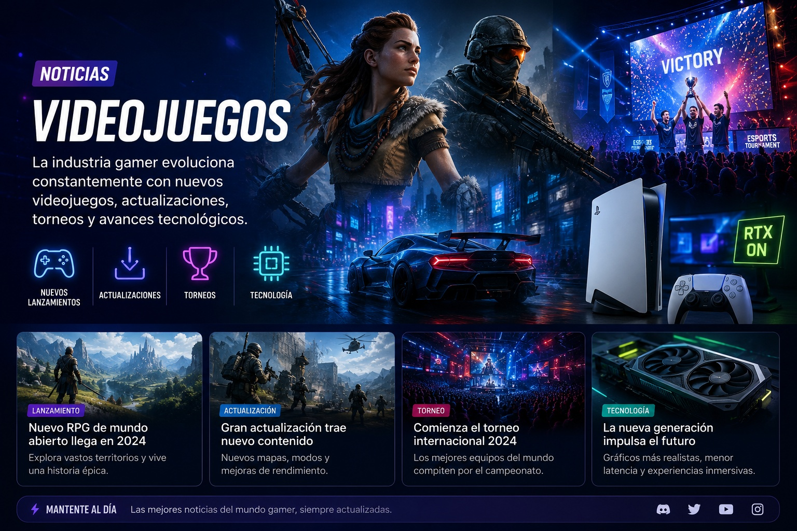
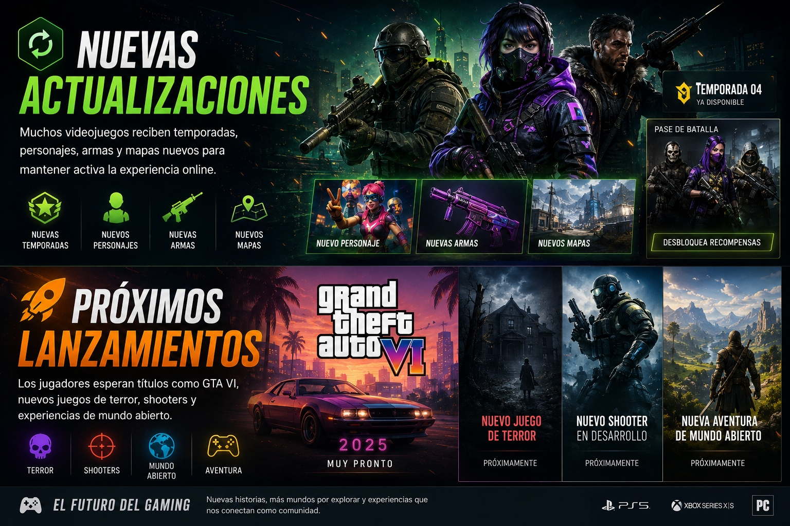

La industria gamer evoluciona constantemente con nuevos videojuegos, actualizaciones, torneos y avances tecnológicos.

Muchos videojuegos reciben temporadas, personajes, armas y mapas nuevos para mantener activa la experiencia online.
Los jugadores esperan títulos como GTA VI, nuevos juegos de terror, shooters y experiencias de mundo abierto.
